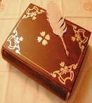

Cuaderno de bitácora

- Día 1: Busque por internet a partir de los enlaces mostrados en la página web de la asignatura diversos diseños gratuitos de CSS, hasta que al final encontré uno de mi gusto en la página web Open Source Web design. También seleccione las fotos algunas sacadas de internet y otras de mi propia colección con las que iba a contar la web.
- Día 2: Empiezo a modificar el diseño bajado, creando la página indice de mi web, creando una línea divisora para los diversos temas que aparecen en la portada y haciendo una caja especial donde se muestra la última fecha de actualización de la web.
- Día 3: Creo el menú de la página colocandolo en horizontal modificando así el diseño original y creo la sección about me, en esta sección encotre diversos problemas ya que el espacio entre líneas era siempre enorme,finalmente lo solucione asignando a cada parrafos de cada sección un class="bloque" que luego con el estilo css le fije la propiedad line_height con un derterminado valor para mantenerlas juntas
- Día 4: Pasé a crear el ocio-blog usando la estructura de la página de incio alternando la foto de un lado a otro y diviendo cada opinión o crítica con la línea divisora utilizada en el inicio.
- Día 5: Creación de la galeria. Para esta sección busque por internet distintos ejemplos de css para mostrar imagenes en css. Finalmente elegi un estilo de carrete de negativos de fotos que al pasar el ratón por cualquier foto, esta aparece en grande con un comentario. En esta etapa me surgieron varios problemas de resolución del estilo respecto al css teniendo que ajustarlo al tamaño de mi página por otro lado y solucionado este problema surgio otro problemas con las fotos que fueron solucionados con el photoshop (resoluciones,poner en formato negativo...). Otro de los problemas era fijar el comentario en un sitio adecuado para leerlo facilmente, para esto fui ajustando los parametros con el css consiguiendo lo mejor posible, pero sin solucionarlo del todo
- Día 6: Una vez terminado este estilo pasamos a validar tanto el html como el css, y soluciono los problemas encontrados según se me marca.
- Día 7: Pasamos a hacer el nuevo estilo empezando desde cero y apoyándose en los apuntes de clase, durante la práctica de este estilo al igual que el otro se va actualizando para ver si va conforme con lo que se desea conseguir. Una vez terminado se ve si valida y una vez conseguido se da por finalizada la página pudiendo actualizarla poniendo nuevos contenidos.
- Conclusiones: Las páginas validan correctamente de forma local sin embargo debido a un código que mete el servidor donde se aloja no valida el html. Asimismo se producen problemas de visión según el tipo de resolución que se use en el ordenador